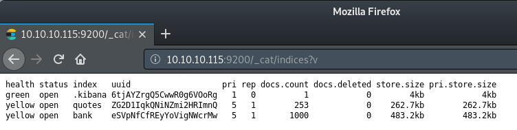

# Port 9200 - Elasticsearch
Elasticsearch is an open source search and analytics engine designed for scalability.
I learnt how to use elasticsearch in a CTF by reading the docs:
https://www.elastic.co/guide/en/elasticsearch/reference/6.1/_list_all_indices.htmlhttps://www.elastic.co/guide/en/elasticsearch/reference/current/search-search.htmlELK StackElasticsearch is also part of the wider ELK stack - Elasticsearch, Kibana and Logstash
https://www.elastic.co/what-is/elk-stack## Listing data
Indexes contain data.
We can list all indexes in the database using
/_cat/indices?vThen we can list all the data in an index using:
/<index>/_search?=prettyBy default,
elasticsearch will only return 10 results. You can get more results using
?size:
<index>/_search?size=100## Search for data with Elastic's query language
You can query/search through indexes using
elasticsearch's query language.
https://www.elastic.co/guide/en/elasticsearch/reference/6.4/getting-started-query-lang.htmlExample:Search through the quote field in the quotes index for claveHere's a Burp querying do just that:
GET /quotes/_search HTTP/1.1
Host: 10.10.10.115:9200
User-Agent: Mozilla/5.0 (X11; Linux i686; rv:60.0) Gecko/20100101 Firefox/60.0
Accept: text/html,application/xhtml+xml,application/xml;q=0.9,*/*;q=0.8
Accept-Language: en-US,en;q=0.5
Accept-Encoding: gzip, deflate
Connection: close
Upgrade-Insecure-Requests: 1
Content-Length: 54
Content-Type: application/json
{
"query": { "match": { "quote": "clave" } }
}